Twisted world
A first testdrive with the new Core Image library for NodeBox. This library has the same functionality as PhotoBot (non-destructive image manipulation) but is a lot faster: Core Image uses the advantages of hardware acceleration. You can find the documentation here, together with the library download and the Twisted World example script.
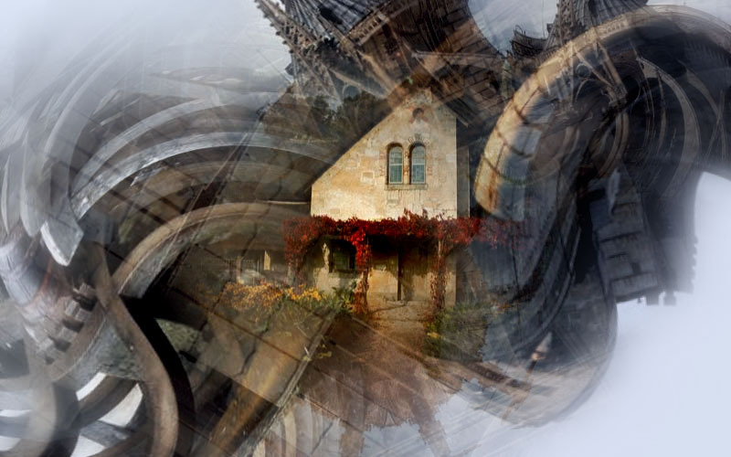
The images on this page are created randomly using the library. The script is deceptively simple. Essentially, the code grabs some images from MorgueFile and composites those on a canvas. It then rotates and scales the images, applies the occasional Twirl or Kaleidoscope filter, and adds a radial gradient mask so the layers overlap nicely at the edges.
The one above is my personal favorite and it contains some manual post-production work. Below you can see other automated and twisted scenery done by Core Image. There are also some first experiments with pixel animation. I'll be sure to include all of the scripts in the upcoming Core Image download.
Series 1
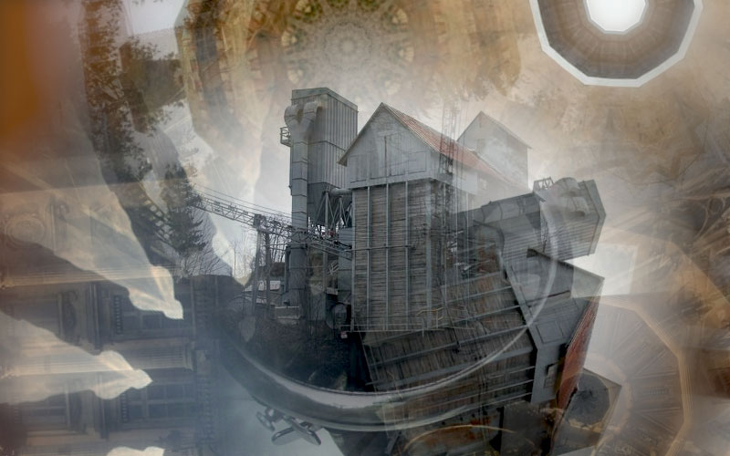 Play movie | a zoom blur filter seems to add a divine radiance to the factory.
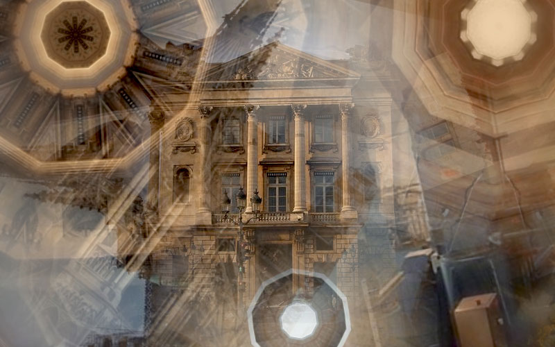 Play movie | twirl and zoom blur filters make the haunted mansion throb grotesquely.
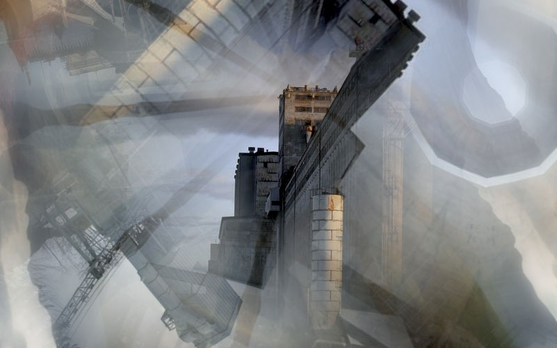 Play movie | using a bump distortion filter it's almost as if flying around the fortress.
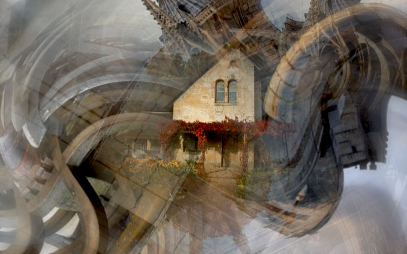 Play movie | walking towards the clockwork house as if in a dream.
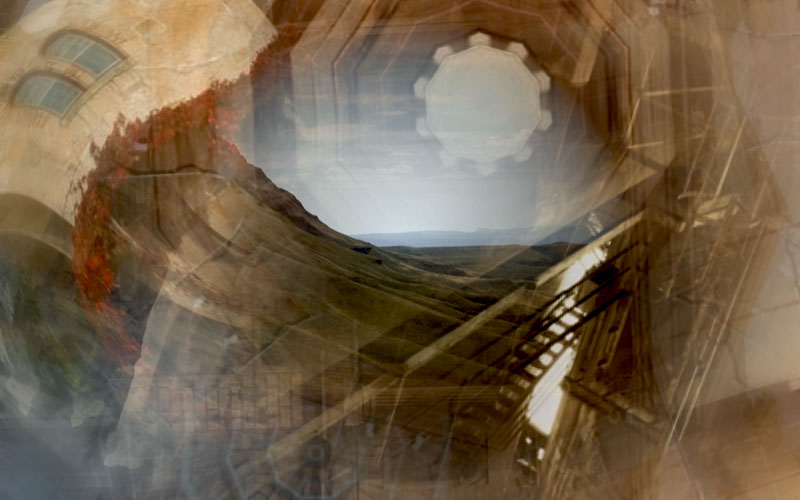
Series 2
A number of heavily filtered and distorted images:
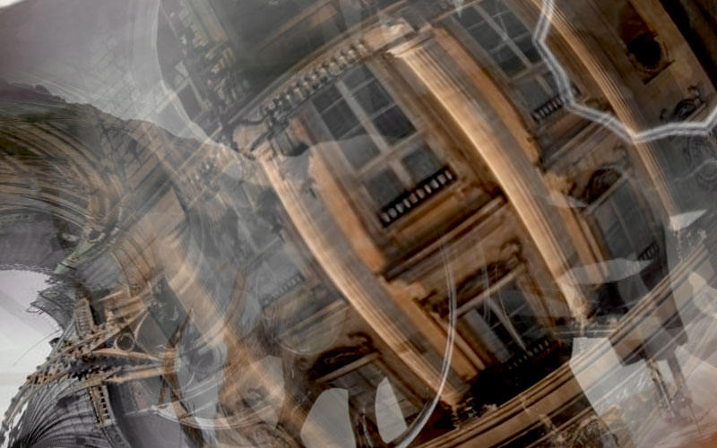
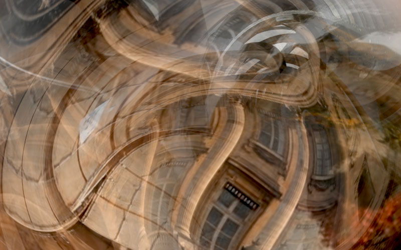
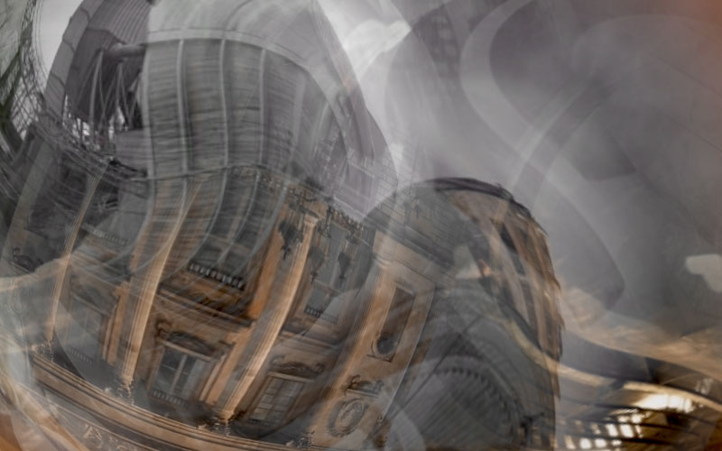
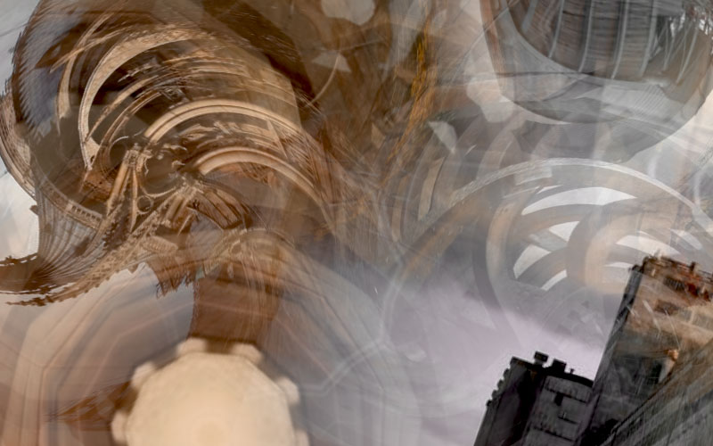
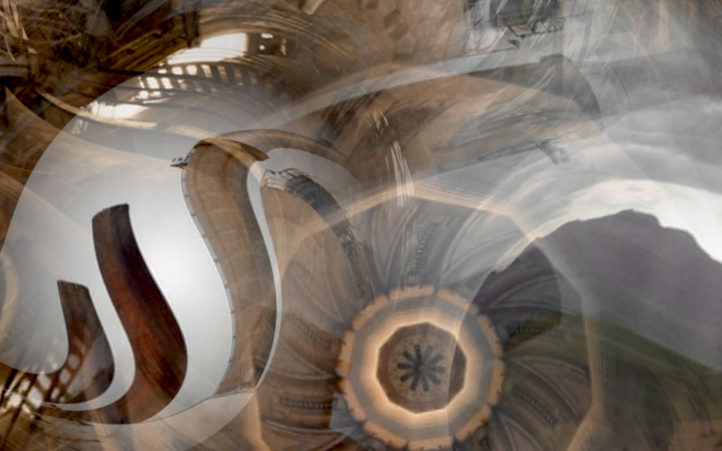
Created by Tom De Smedt